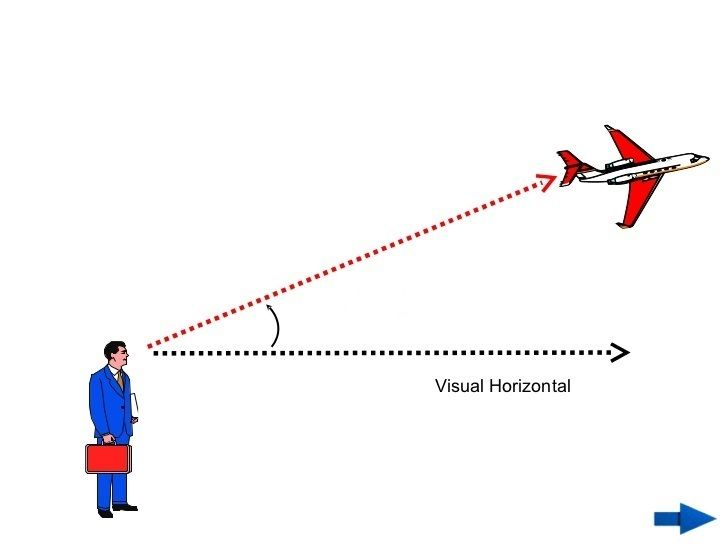
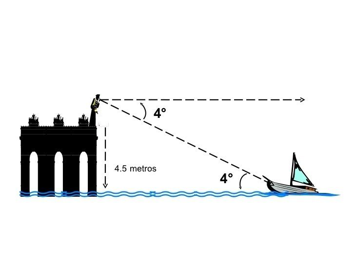
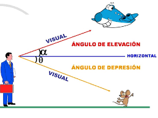

Si estás aquí, te felicito, sigues en tu camino a ser un pro en tus clases de matemáticas con el Profesor Grebil😎
Esta es una clase complemenaria para que no tengas ninguna duda en la Aplicación de las Funciones Trigonométricas.
¡Vamos a comenzar!
Ángulo de Elevación y Depresión

¿Qué son y Para Qué Sirven?
Son ángulos formados por una línea horizontal y las líneas de visión de un observador, pero se diferencian en la dirección de la línea de visión. Se usan para describir la inclinación con la que miramos hacia arriba o hacia abajo desde una línea horizontal imaginaria.
Ángulo de Elevación
Es el formado por una línea horizontal y la línea de visión de un observador hacia un objeto que se encuentra por encima de esa línea horizontal. En otras palabras, es el ángulo que se forma cuando miras arriba a algo.

Ángulo de Depresión
Es el que se forma entre una línea horizontal y la línea de visión de un observador cuando mira hacia abajo a un objeto. En otras palabras, es el ángulo que se mide desde una línea horizontal imaginaria, paralela al suelo, hasta la línea que conecta el ojo del observador con el objeto que está mirando hacia abajo.

Así forman el siguiente plano que muestra ambos ángulos formados por una misma Línea Horizontal y dos Líneas de Visión
